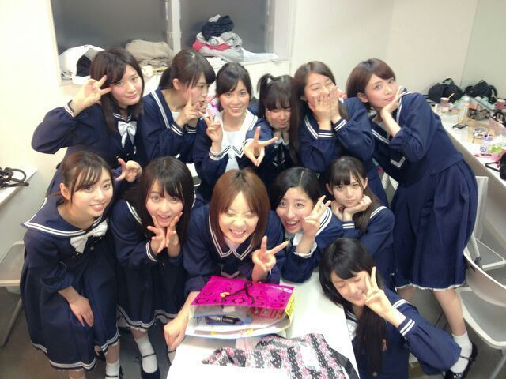

朗報ー
久々の写めですぞー(*^ω^*)
ふえいっ
ポーズは謎。
何を考えて撮ったんかしらほんとに。
さて公演10日目＆東京千秋楽！
来て下さったみなさんありがとう(^O^)
なんとゆーか感慨深いねー
はーい難しい言葉つかってみたよー
おとといは
昼は明田川、夜は洋子に立候補しました
せっかくだから冒険してみようって！
結果はだめだったけど、
後悔はしてないです(ω)
でも明田川さんは
どうもやっててしっくりこなかったかなー
昨日は
昼も夜も北嶋に立候補しましたー
あは。こっちもだめだったなー
昨日に関してはほんとにボロボロで
なんかーみにきてくださったみなさん
ほんと申し訳ないです(´・ω・`)
メンバーさんとかスタッフさんとか
いろんな方に励ましてもらって情けない。
ブログ書きながら泣きそう誰かああっ
あのね普段は泣かないタチなのねー
まして舞台上で。ふへへー
なんかこの1週間で
涙腺ぶっこわれーよ！
どないしてくれんねんほんまに！
あたしは甘えん坊で寂しがり屋だけど
泣き虫ではないんや！
あっでもあれです
心配しないでねー♪
でもほんとに
赤坂ACTシアターの舞台立つの怖い。
はいっえーとゆーわけで
ひめたは無茶ぶりに弱いとゆーことも
一発ギャグ振ったら泣き出すゆーことも
わかった舞台でしたね！
...ごめんなしい
自虐はそろそろやめます。えーっと
演技。そう演技なんてね
今まであんまし興味がなかったんだけど
演技って楽しいなって思いました(〃ω〃)
これからもそーゆー機会があったら
ぜひ女優のお仕事もしてみたいですー♪
それから、乃木坂の新たな挑戦てことで
今まで誰もやったことないような
むちゃくちゃな舞台にチャレンジして
今までよりもさらに
レベルアップできたんでねーのかしら。
来年は全員で出れたらいいな(・∀・)
あ。ひめたん受験生やんけ(・∀・)
まあ来年の話は来年しましょう
そしてこの東京公演が無事成功できたのは
今日まで支えてくださった
スタッフさん、メンバーのみんな、
そしてあたたかい言葉をたくさんくれた
乃木坂ファミリーさん、
ひめきゅんさんのおかげです
みなさん本当に本当に
ありがとうございました！
大阪公演も引き続きよろしくお願いしますっ
とりあえず
愛未の明しゃんにメロメロです(´,,・ω・,,`)

teanチーム楽屋2＊
10日間お世話になりました！
ほのぼのした感じが好きだったー！
(＊'・ω・＊)